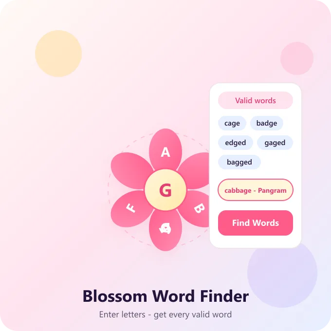

Blossom Word Finder & Solver: Find Every Word for Today's Puzzle
Enter your letters, get valid words, hints, and tips for today's Merriam-Webster Blossom word game — free, no sign-up.
Enter Your Letters
Type the 6 petal letters and the center letter from today's puzzle, then find every valid word.
Words must be 4+ letters, include the center letter, and use only your 7 letters — letters can repeat in a word.

Stuck on today's flower? You're not alone. Every day, thousands of players open the Merriam-Webster Blossom word game, stare at seven letters arranged in a circle, and hit a wall. That's exactly what this page is for. Use the Blossom Word Finder above to enter your letters and instantly see every valid word you can form — plus hints if you'd rather figure it out yourself.
Whether you searched for a Blossom word finder, a Blossom solver, or just a quick Blossom hint, you're in the right place. This tool covers all three.
What Is Blossom Word Game Solver and Helper?
A Blossom Word Game Solver and Helper is an online tool designed to help players find valid words and solve challenging blossom puzzles. It analyzes letters, word patterns, spelling variations, prefixes, suffixes and vocabulary relationships to generate relevant solutions. By understanding how words are formed and how they relate to one another, the tool can identify potential answers from a broad dictionary. Players can use this tool to discover longer words, verify possible combinations and overcome difficult puzzles. It is useful for improving vocabulary, developing word-solving skills, and finding solutions faster while enjoying the popular word game.
How the Blossom Word Finder Works
The rules of Blossom are simple, but they trip people up more than you'd expect. You get seven letters arranged like petals around a center letter. Every word you submit has to include that center letter. Words need to be at least four letters long, and you can reuse any letter as many times as it makes sense grammatically — even if it only appears once on the flower.
Our word finder takes those same rules and applies them automatically. Type in your seven letters, mark which one is the center letter, and the tool checks every possible combination against a dictionary. What comes back is a clean list of valid answers, sorted from shortest to longest, so you can decide how much help you actually want.
This matters more than it sounds like. A lot of "word finder" tools online just show every combination of letters, whether or not it's a real word, or whether it fits Blossom's specific rules. Ours doesn't. It filters out proper nouns, abbreviations, and anything the actual game dictionary wouldn't accept, so you're not stuck arguing with the puzzle over a word it was never going to allow.
Blossom Solver: Same Tool, Different Way of Asking
If you searched "Blossom solver" instead of "word finder," you landed in the right spot too. People use both terms for the same thing — a way to plug in letters and get real words back. Some call it a solver because it "solves" the puzzle for them. Others call it a finder because it "finds" the words hiding in the letters. Either way, the tool above does both jobs.
The only real difference is how much of the answer you actually want to see. That's where hints come in.
Blossom Hints and Clues: Help Without Giving It All Away
Not everyone wants the full answer key. Some players just want a nudge — enough to get moving again without ruining the satisfaction of figuring the rest out themselves. That's what this section is for.
A few ways to use hints and clues without spoiling the whole puzzle:
- Ask for the first letter of a word you haven't found yet, instead of the whole word.
- Ask how many words are still left to find, so you know whether to keep pushing or move on.
- Look for the pangram hint only — the one word that uses all seven letters — since it's usually the hardest one to spot and the most satisfying to solve.
- Check word length instead of the word itself. Knowing there's a six-letter word left can point your brain in the right direction without giving anything away.
If you do want the full list, scroll back up to the Blossom Word Finder. But a lot of regular players say the game gets more enjoyable once they start using hints sparingly instead of solving the whole board every time.
Tips for Getting Better at Blossom Without a Solver
Using a word finder every day is fine, but if you want to rely on it less over time, a few habits help.
Start with the center letter
Since it has to appear in every word, build outward from it instead of scanning the whole flower randomly. Think about common prefixes and suffixes that contain that letter — endings like -ing, -ed, or -tion can unlock several words at once if the right letters are on the board.
Look for short words first
A three- or four-letter word you spot quickly often reveals a longer word hiding inside it. Add a letter, check if it still works, and keep building.
Don't ignore repeated letters
Blossom lets you reuse any letter on the flower, even the ones that only appear once. This trips up new players constantly — they assume each letter can only be used the number of times it's shown, but that's not how the game works.
Save the pangram for last
It's tempting to hunt for the word that uses every letter right away, but it's usually easier to spot once you've already found a handful of shorter words and have a feel for how the letters combine.
Frequently Asked Questions
Is the Blossom word finder free to use?
Yes. There's no sign-up, no download, and no limit on how many times you can use it per day.
Does the word finder work for every day's puzzle, not just today's?
Yes — just enter whatever seven letters and center letter you're seeing, and the tool works the same way regardless of the date.
What's the difference between a hint and a full answer?
A hint gives you a partial nudge — a letter, a length, or a category — without revealing the whole word. The word finder gives you the complete list of valid words for your letters.
Can I use this if I only remember some of the letters?
It works best with the full set of seven, since Blossom's word list depends on exactly which letters are available. If you're missing one, try your best guess and check the results against the actual game.
Is this the same as the Merriam-Webster Blossom game?
This tool is built specifically to match the rules of Merriam-Webster's Blossom, so the words it returns follow the same standards the actual game uses.
Is there a Blossom app I can download?
Blossom is a browser-based game, so there's no official standalone app or APK to install. You can play directly in your phone or desktop browser, and this word finder works the same way — no download required.
What's the difference between Blossom and Spelling Bee?
Both are Merriam-Webster word games, but they work differently. Spelling Bee gives you a fixed set of letters and asks for as many words as possible with no word limit. Blossom caps you at 12 words per puzzle and arranges the letters in a flower shape, so it rewards precision over volume.
How is my score calculated in Blossom?
Longer words earn more points, and using the center letter correctly is required for every word to count at all. Finding the pangram — the one word that uses all seven letters — usually gives the biggest score boost in a single puzzle.
Why does the word finder reject a word I know is real?
Blossom uses a curated dictionary, so some valid English words aren't accepted if they're too obscure, are proper nouns, or are abbreviations. If a common word gets rejected, it's most likely filtered out by the game's own word list rather than an error in the tool.
Do I need to create an account to use the word finder or play Blossom?
No. Both this tool and the Blossom game itself are free to use without signing up, and no personal information is required.